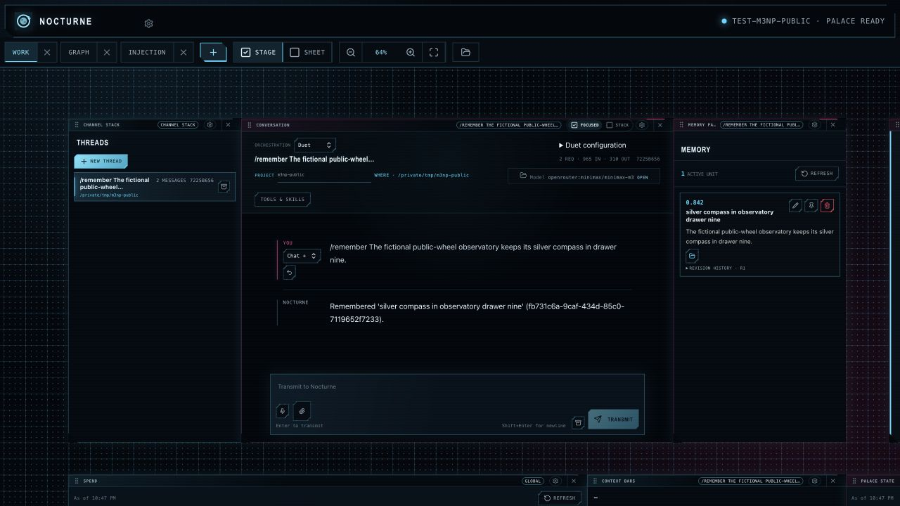
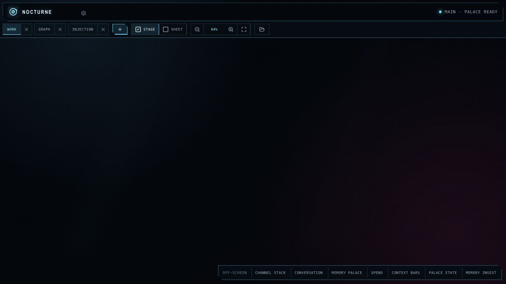
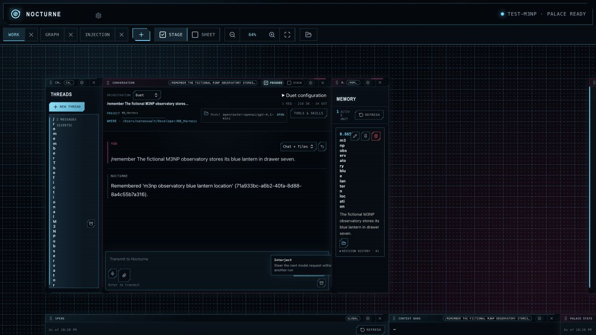
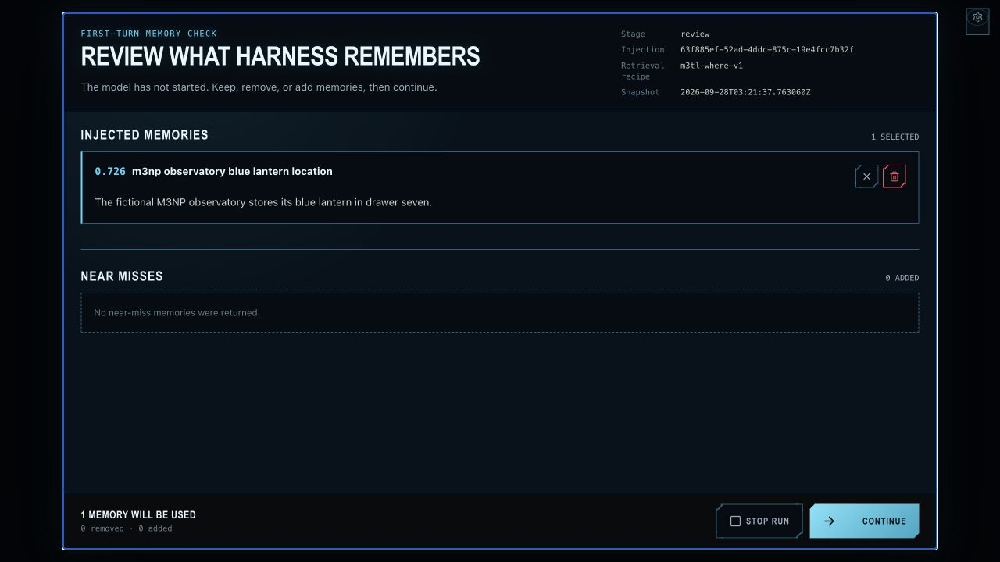
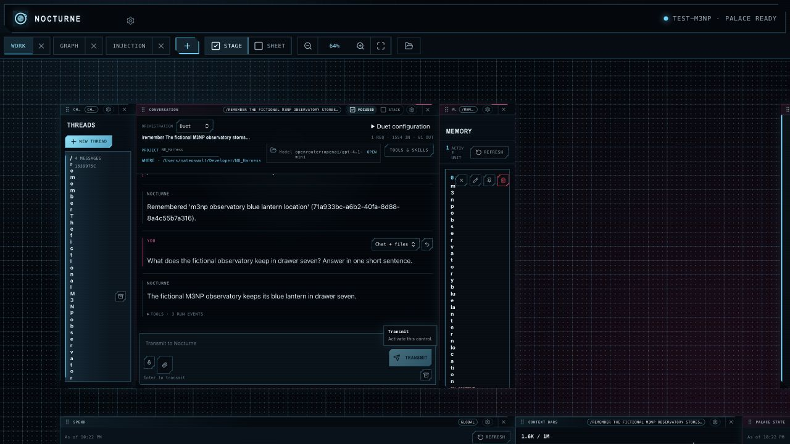
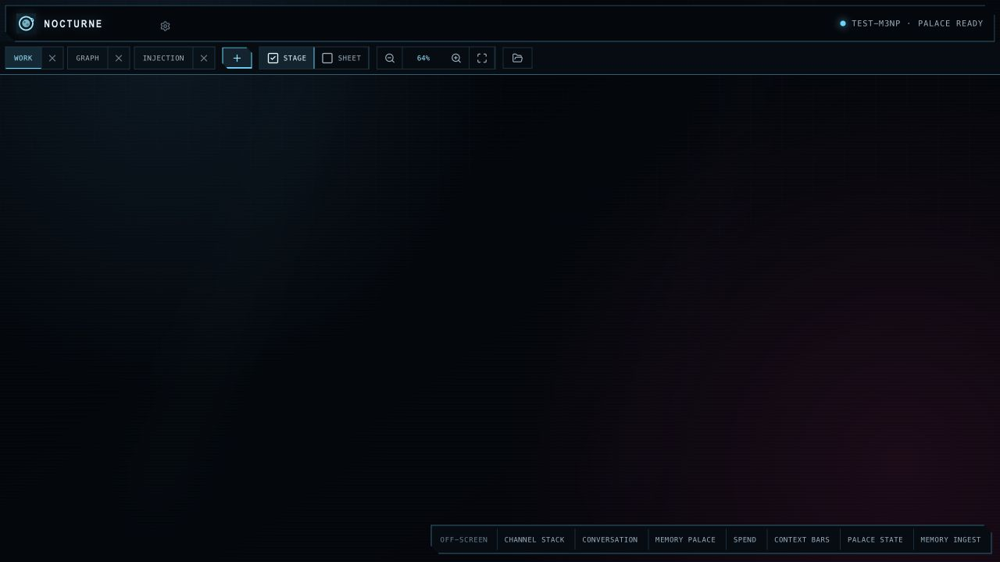
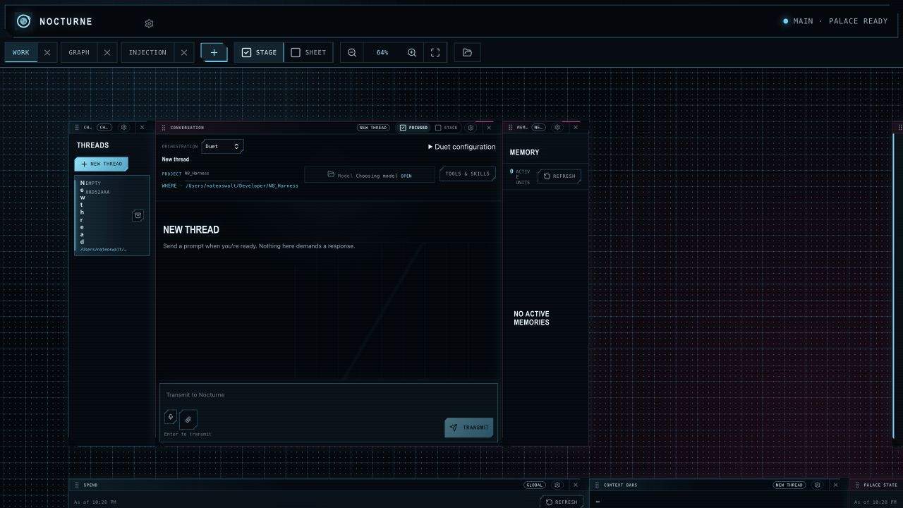

Public 0.1.40 wheels: created a second Palace in 46.5 seconds, saved one fictional memory, switched the app to main and dropped all test resources. Both scratch homes were removed. Release receipts.


Created in 43.8 seconds → saved one fictional memory → approved and recalled it → restarted → switched back → refused main deletion → dropped the test Palace and its one memory.
Owner memory revisions, schema, service specification and local config unchanged. Whole-database hashes changed under two concurrent verification identities; this session wrote zero memories to main. See owner audit and cleanup.
The charged lifecycle passes. Broader shared-file impact rows without a full scenario remain explicitly NOT PROVEN (F086) in the coverage report; green regression suites are not universal feature proof.




